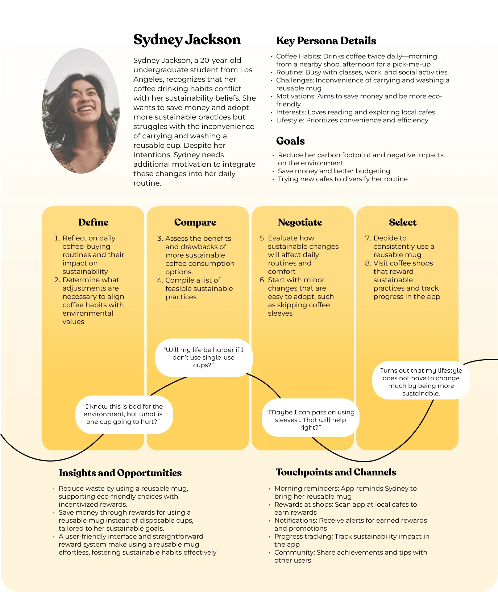
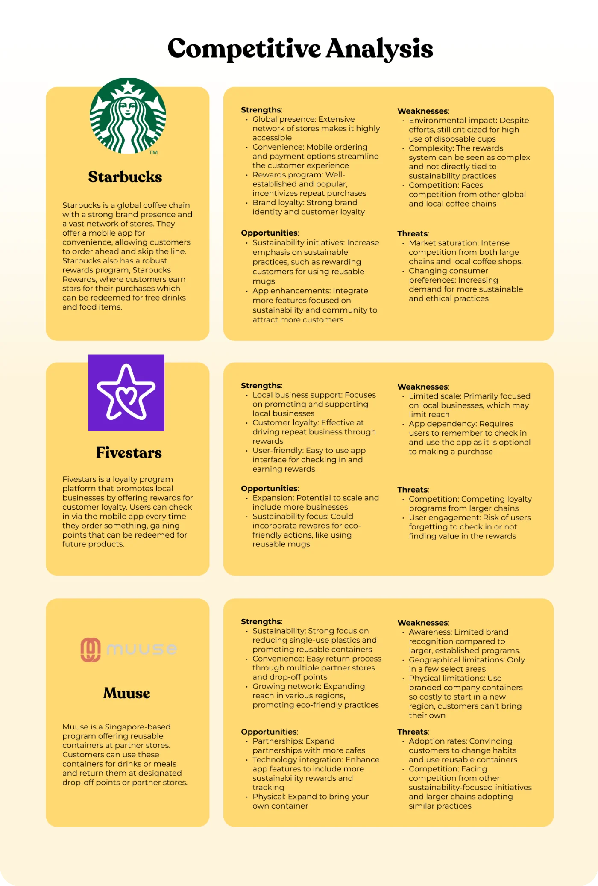
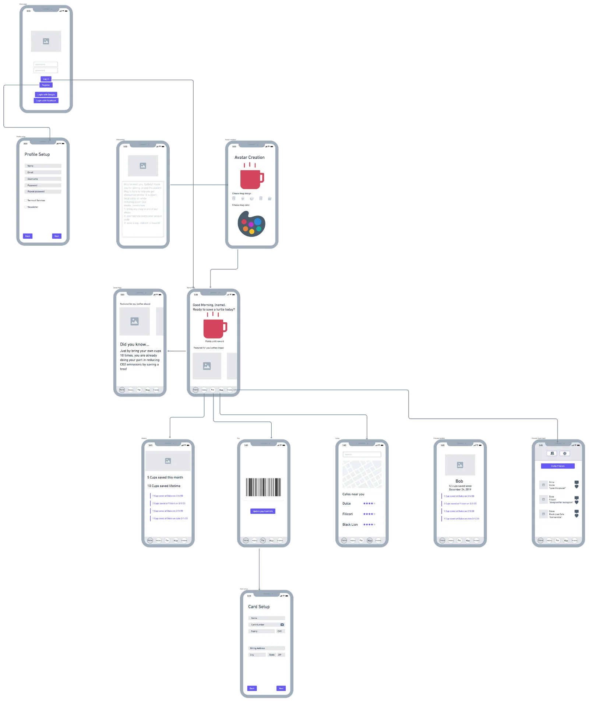
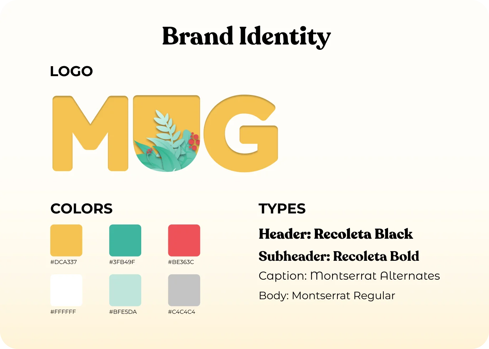
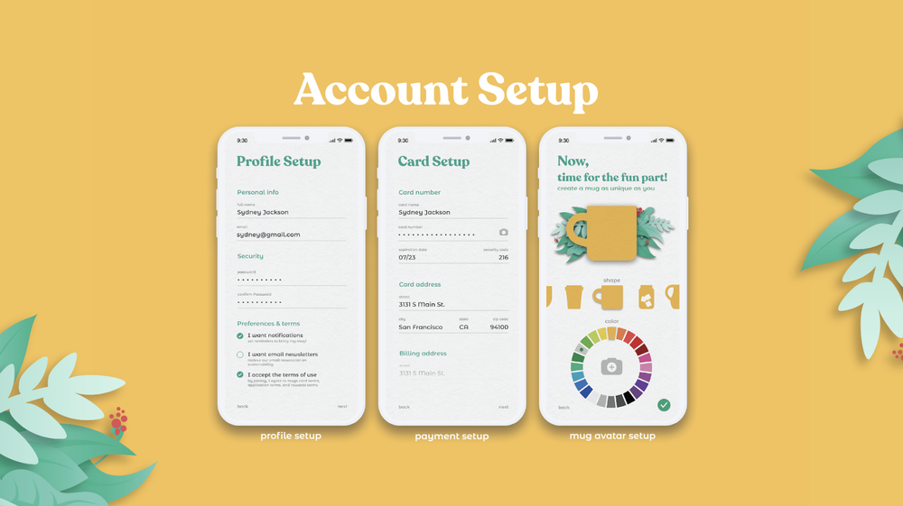

A rewards app for bringing any reusable cup to a local café. Four of us worked on it for one semester, from a 60-person survey through wireframes and animated prototypes.
ROLEProduct designer
TEAM4 people · class project
TIMELINE3 months (one semester) · 2022
TOOLSFigma · Whimsical · Qualtrics
What it isRewards for bringing a reusable mug to local cafés. No purchase-gated cup: any mug counts.
My partI owned the persona and brand identity. The survey, flows, and wireframes were shared team work. [PLACEHOLDER — VERIFY: I also designed the home, rewards, and profile screens and built all three animated prototypes.]
StatusUnshipped concept Wireframes tested; the hi-fi design was never tested or launched.
Project status: this was a class concept. The wireframes were tested; the final UI was not. The exact test details and final-screen ownership below still need verification.
WHY PEOPLE SKIP THE REUSABLE CUPTOP 3 OF 60 SURVEYED
35%
FORGET TO BRING ONE
21%
SEE NO REASON TO
13%
DON'T HAVE TIME
The top three barriers from our Qualtrics survey of 60 college students who did not use reusable cups. [PLACEHOLDER — VERIFY: Add a link to the full survey summary, including the remaining 31% of responses.]
PEOPLE DID NOT NEED ANOTHER LECTURE
Most people already knew single-use cups create waste. The barriers were more ordinary: they forgot a cup, felt rushed, or did not see a reason to change. We designed around convenience and rewards.
FORGETTING, HURRY, AND NO REASON TO CARE
Reminders address forgetting. A barcode and saved payment address speed. Rewards give the 21% who saw no reason to bring a cup an immediate one.
“How might we make being sustainable the convenient choice, not the extra chore?”
THE HMW THAT GUIDED THE DESIGN
CONVENIENCE CAME BEFORE IDEALS
I turned the survey patterns into Sydney, a student who buys coffee most mornings and already understands loyalty apps. Time and money come first for her; sustainability is a bonus. That order shaped the product.
PersonaRestyled in the final brand for presentation.
JOURNEY
The journey map tracks the habit change and marks where an app can step in: reminders when resolve is fresh, progress tracking when it fades, rewards at the register.

Journey mapA habit-adoption journey rather than a day-in-the-life.
REWARD BRINGING, NOT BUYING
Most programs rewarded buying a branded cup or buying more drinks. Mug rewards the behavior itself. Any reusable cup counts. That led to six features:
Accounts tracking every cup saved, over time and per café
A feed where friends see and nudge each other's savings
Saved payment for faster ordering and instant discounts
Custom avatars: a mug made yours
A barcode front and center
Local café recommendations, spreading traffic beyond the chains

Competitive scanTwo findings mattered: rewards gated behind branded cups, and nobody pointing traffic at local shops.Sitemap & flowPayment and barcode sit one tap from home.

WireframesFirst pass, before testing (below).
WIREFRAME TEST
[PLACEHOLDER — VERIFY: We tested the wireframe remotely with 7 college students. Three asked for a shareable referral offer, and 4 read the card-reload step as a second payment account.] We added referral links and replaced stored-value reloads with direct payment.
"Sendable links with first-time promos would get more people to download it."
PARTICIPANT, WIREFRAME TEST · WE ADDED REFERRAL LINKS
Card reloads read as a chore, so we cut them for direct payment.
TEAM DECISION AFTER TESTING · ONE LESS STEP AT THE REGISTER
BRAND
I designed the brand to feel like a neighborhood café, not an environmental campaign. Green carries the reusable-cup story. Red appears only on rewards and the barcode, the two moments with immediate value. Recoleta handles headlines; Montserrat keeps the interface readable.

BrandTuned to feel like a good local café rather than an eco-guilt app.
THE FINAL CONCEPTPROTOTYPE, IN MOTION
01
Sign up, then straight in
Social sign-in or a quick account, customize your mug, and you're in.
02
Cups saved, cafés found
Home counts saved cups and recommends local shops; the barcode sits center-stage.
03
ECOmmunity
Friends' saves and streaks, plus the cafés they love. Accountability without the lecture.
HIGH-FIDELITY SCREENSFIGMA

OPEN QUESTIONS
What a launch would need answered that a semester didn't:
Verification. "Any mug counts" is the pitch and the hole. We designed the customer side only.
The café economics. We claimed cafés benefit but never interviewed one. The discount has to come from somewhere.
Hi-fi validation. The final design was never tested; its green-on-white text deserves a contrast pass.
The first missing piece is verification:
The customer's barcode already identifies who is paying. A barista could confirm the mug with one tap before the discount settles. It needs no new hardware, but that is still only a design hypothesis. I would test it during a real rush before building the merchant side.
We should have spoken to café staff before drawing the customer flow. A useful first round would be [PLACEHOLDER — VERIFY: 20-minute interviews with 6 staff across 4 independent cafés, followed by two timed register tests during a busy hour]. The questions are simple: who funds the discount, how much time can verification add, and what level of misuse is acceptable?
A small pilot should track:
Metric
Definition
How
Goal (not a result)
Limitation
Repeat bring-rate
% of users whose 2nd+ visit includes a mug scan
Scan events per user
Baseline first, then grow it
Confounded by discount size
Register time delta
Seconds added per transaction at pilot cafés
Timed observation, 1 rush hour per café
≤3s or the mechanic fails
Small sample; observer effect
Café retention
Pilot cafés still active after 8 weeks
Merchant dashboard
The business-side truth test
Tiny n in a pilot
WHERE IT LANDED
The survey pointed to a practical product: reminders for people who forget, a fast barcode at the register, and rewards for people who need a reason beyond sustainability.
Concept statusunshipped · wireframe-tested
Cut after testingcard reloads → direct pay
Any mug countsno purchase required; verification unsolved